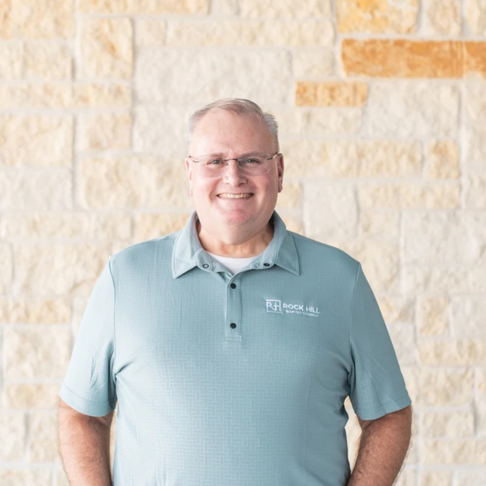
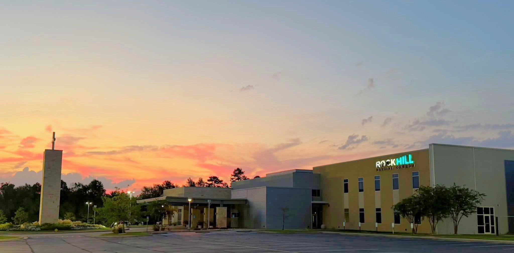

Pastor Spotlight · Rock Hill Baptist Church
Pastor Heath of Rock Hill: “Faces over spaces”
A year and a half after coming home to East Texas, Rock Hill Baptist Church’s lead pastor talks about two campuses, a church outgrowing its space, and why faithfulness and people come first.

BROWNSBORO — At 5 Friday morning, Pastor Heath Peloquin was already up with his church team and members of the community, cooking breakfast for the Brownsboro ISD homecoming football team and cheerleaders. For Pastor Heath, that kind of morning is the point. He wants the church to make connections on purpose and to be present in every area it touches.
“Faces over spaces, people are our ministry,” Pastor Heath said.
He has served as Rock Hill’s Lead Pastor for about a year and a half. The church called him in February 2025 after seven years as senior pastor of Summer Grove Baptist Church in Shreveport, Louisiana. He grew up in Rusk and came to faith at a 1984 revival at First Baptist Church Rusk. His first ministry position was in youth ministry in Athens. He holds a church music degree and a master’s from the University of Mary Hardin-Baylor, plus a Doctor of Ministry in evangelism and missions from Southwestern Baptist Theological Seminary.
The church’s staff page sums up his job in five words: “I pray, pastor, and preach.”

Two campuses, many generations
Pastor Heath describes Rock Hill as multigenerational and multiethnic. Members come from all over the area, and the church works closely with local schools and the cities of Chandler and Brownsboro. He sees the church as being here to bless and serve. Sundays bring three services, and he enjoys how each one has different people and different needs.
During the week, children and students meet on the Main Campus and adult ministry meets at the West Campus. He counts repurposing the West Campus, and watching the Lord use it, as a recent win.
New Life Recovery helps people find freedom from addiction and supports The Anchor, a sober-living home for men in Eustace. Foundations is the church’s early learning center for young children. Once a month, Rock Hill’s outreach center partners with the East Texas Food Bank to give away groceries and share the Gospel.
Out of room, walking by faith
The biggest challenge is a good one: Rock Hill is outgrowing its space. The church is working through Project 31, a three-phase church improvement plan, and planning for its facilities over the next two to three years. Pastor Heath sees the season as a lesson in trust.
“If we are faithful, God will provide,” he said. “God loves faithfulness.”
Behind that message is an old conviction from Scripture: “The righteous shall live by faith” (Romans 1:17, ESV). The line first appears in Habakkuk 2:4 and returns in Romans 1:17, Galatians 3:11 and Hebrews 10:38. For Pastor Heath, it describes where Rock Hill stands right now.
He has a great relationship with neighboring pastors and wants every church that names the name of Christ to be blessed. He is praying Habakkuk 3:2 over the community, asking God to renew and revive what has grown old.
“O LORD, I have heard the report of you, and your work, O LORD, do I fear. In the midst of the years revive it; in the midst of the years make it known; in wrath remember mercy.” (Habakkuk 3:2, ESV)
Next up is Ignite Sunday on Oct. 18. It will feature evangelist Shane Pruitt at Rock Hill’s regular Sunday service times: 8:30 a.m. (Classic) and 9:45 and 11 a.m. (Contemporary). He encourages Rock Hill members to invite people, because people will come to church if they’re invited. Anyone who needs help can just stop by. The doors are open, and the church has counseling on staff.
Away from the pulpit, Pastor Heath and his wife, Jennifer, have four children. He played lineman in high school and is now an avid runner. According to the church, his favorite hobbies are reading, running, fishing and hanging out with his family.
It is clear to anyone who meets Pastor Heath that he is warm, carries himself with grace and makes himself available, which is remarkable for a pastor leading a church with three Sunday services. He truly strives, by the Spirit of God, to set an example, speak the truth in love and be an encouragement to the community, all for the glory of Christ.